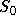
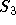

The geometry of the discretization stencil is described by an array of integer tuples in 2D (triples in 3D), each representing a relative offset (in index space) from some gridpoint on the grid. For example, the geometry of the 9-pt stencil for the example problem being considered can be represented in the following way:
In (3.2), the (0,0) entry represents the ``center'' coefficient, and is the 0th entry in the array (  ). The (0,-1) entry represents the ``south'' coefficient, and is the 3rd entry in the array (  ). And so on.
On process 0, 1, or 2, the following code will set up the stencil in (3.2).
HYPRE_SStructStencil stencil;
int s;
int offsets[9][2] = {{0,0},
{-1, 0}, { 1, 0}, { 0,-1}, { 0, 1}};
{-1,-1}, { 1,-1}, {-1, 1}, { 1, 1}};
HYPRE_SStructStencilCreate(2, 9, &stencil);
for (s = 0; s < 9; s++)
HYPRE_SStructStencilSetEntry(stencil, s, offsets[s], 0);
Create() routine creates an empty 2D, 9-pt stencil object.
The SetEntry() routine defines the geometry of the stencil, and
assigns the array numbers for each of the stencil entries. None of
the calls are collective calls.